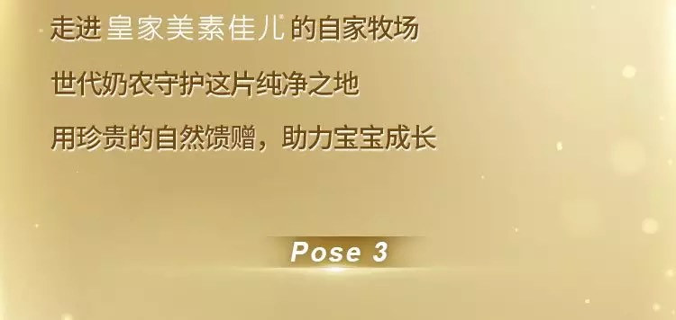
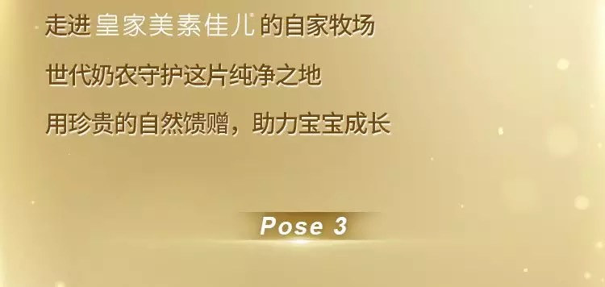

关于喝奶，宝宝们的提问脑洞大开，而妈妈最关心的，是给宝宝最好的营养。为何母乳是婴儿最好的食物？母乳中含有哪些天然营养无可替代？皇家美素佳儿邀请生物学、化学、营养学等多领域优秀回答者，全方位了解母乳中的「天然营养」。
李昌
资深工程师
母乳中的天然中短链脂肪酸，对宝宝有什么益处？
人们谈到脂肪就「色变」，其实脂肪对人体意义非常重要。脂肪中的中短链脂肪酸，对于宝宝的大脑发育、肠道健康都起到怎样重要的作用？天然中短链脂肪酸，又有哪些与众不同之处？
初夏之菡
在悉尼从事食品安全与营养工作
乳磷脂如何让奶粉从「达标」到更接近母乳营养？
乳磷脂是一种听起来有些陌生的物质，但它在母乳中却扮演着重要角色。那么，乳磷脂究竟是什么？它的作用有哪些？以及人工配方奶粉又是如何对此进行模拟的？
孙亚飞
资深食品工程师，科普作者
母乳中的天然「OPO类似结构脂」为什么珍贵？
母乳是天然也是婴儿最珍贵的第一口哺育，选择一款接近母乳成分。为什么说OPO类似脂肪结构是模仿母乳的关键营养素？而天然OPO类似结构脂和人工合成的OPO分子精确还原结构，营养上有什么区别？